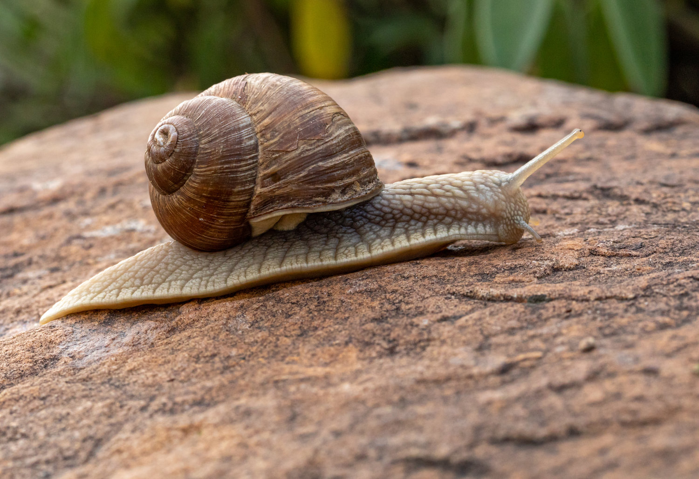

Snails are shelled mollusks, which are a group of animals which includes clams, squid and slugs. They are also invertebrates which means they do not have a backbone. Snails have 4 tentacles. The top pair are for seeing and the bottom pair are for feeling. They do not have any legs so instead they use a muscular foot for sliding.
Snails live in damp places such as rainforests, trees, dirt and bushes. Sea snails live in saltwater or freshwater. Snails usually come out in wet weather because they love water. A Lot of the time, they leave home and find more wet places.
Snails eat cucumber, lettuce, parsley, banana peels and sometimes potato. They do not eat tomato, orange, lemon, grapefruit and meat. Snails can even eat each other!
Snail slime is made up of mucus which helps the snail move. The mucus also protects the snail from sharp objects. It can also prevent the snail from drying out.
The average lifespan of a snail is 2 - 5 years. Some snails can live up to 10 years and 25 years if they have been hibernating for a very long time. Snails can hibernate for up to 3 years (if they want to).
Snails sense things with their eyes, feelers, skin,
and their mouth. Snails don’t have any ears and they don’t need them. Snails eyes are for seeing and their feelers and skin are for feeling things.
SMALL FACTS ABOUT SNAILS
Some snails can eat each other
Snails can sleep for up to 3 years
Snails are related to squid
Snails can’t live without a shell
Snails have more than 10,000 teeth
It would take about a week for a snail to walk a kilometre